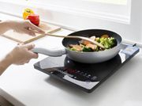
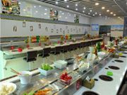
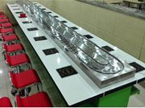
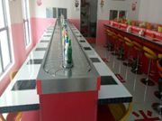
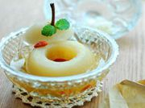

回转小火锅采用全自动机械传送食材，其特点是时尚、卫生、快捷、营养全面，不必长时间等餐，根据不同...
查看详情2018-03-30

旋转火锅设备是时尚火锅店内很流行的，无论多么先进的设备都难免不会出现一些小问题，小编就来为大家说一些故障的解决办法。 1、突然停转。解决方法：查看下电源开关是不是跳...
查看详情2018-03-30

随着现代社会的快速发展，人们对生活质量的要求也有所提高。无论怎样发展，餐饮行业是永远也不会过时的一个行业，当下火锅是最为火热的，它不仅仅是一个地方菜系，它是在全国...
查看详情2018-03-30
近年来，吃火锅的人越来越多，火锅的样式也越来越多样化。特别是一种旋转火锅更是得到人们的青睐，它利用旋转火锅设备，给经营者带来源源不断的财富。今天小编给大家分析一下...
查看详情2018-03-30

随着回转火锅备受市场的欢迎，很多人自主创业就选择了开一家回转火锅店，只要是店面选址好、装修设计跟得上食代的潮流都会让您赚翻！小编身边的朋友就有很多开回转火锅店的，...
查看详情2018-03-30

旋转火锅设备一直是比较火的火锅设备，采用一人一锅的形式代替多人围大锅的情形；减少了享用美食前的等待，基本上就座没几分钟就可以吃到自己喜欢的美味；完全自助式想吃什么...
查看详情2018-03-30

商用电磁炉顾名思义，指的是应用在公共场所的电磁炉，如火锅店、饭店、宾馆酒楼、厂矿企事业、机关院校、部队、火车、轮船等公共厨房，特别合适限制使用明火的所有商用厨房。...
查看详情2018-03-30

回转火锅作为最流行的美食，为我们的生活增添了一份舒适。不管朋友聚餐还是恋人之间约会，回转火锅餐厅都是我们的首选。餐厅拥有回转火锅设备这样的时尚设施，同时也提高了餐...
查看详情2018-03-30
1、麻油味精碟 原料：小磨麻油，味精。 制作：用小碟，舀入麻油，放入味精，调匀即可。 2、麻油蒜泥碟 原料：小磨麻油，大蒜，味精。 制作：大蒜去皮，放入瓦钵中捣成泥状；麻油...
查看详情2018-03-30